Measuring nasal symmetry in real time, on a phone
How do you assess nasal symmetry during surgery, accurately enough to trust, on hardware a clinic already owns?
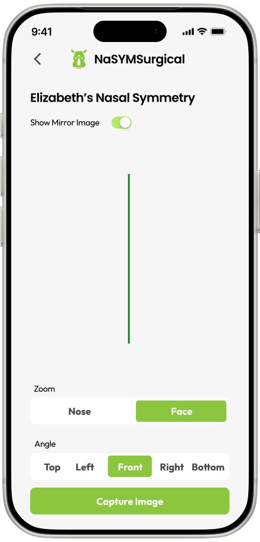
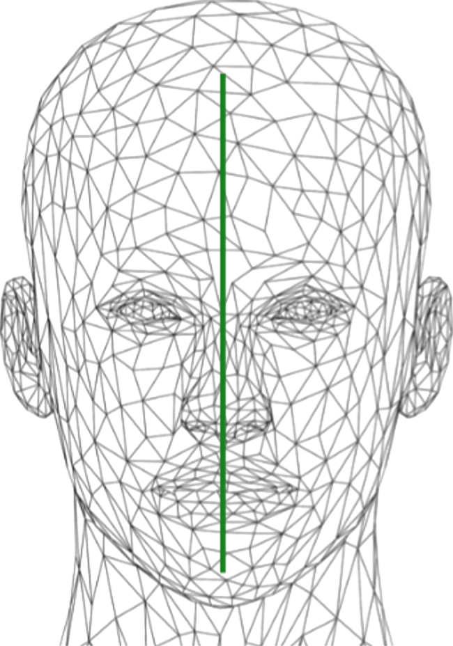
Background
An eight month final-year capstone in partnership with Sunnybrook Research Institute, with the prompt open to anything in our field. The goal: give surgeons a way to measure nasal asymmetry during rhinoplasty, accurately enough to guide adjustments, on hardware they already carry.
Four of us ran the research and interviews together. I owned all of the design — the user flow, every screen, the visual system — and built on the front end in Swift with one teammate, while the other two handled the backend and the symmetry algorithms.
Research
Initial problem discovery
- Visual perception limits. Surgeons struggle to perceive and manipulate small distances within the 2–4 mm range, which is exactly the range that matters for evaluating nasal symmetry.
- Complexity of nasal anatomy. Symmetry has to be assessed against both the facial midline and the nasal midline, and each nasal component can deviate differently.
- Intraoperative challenges. Proximity to the patient, tissue swelling, unbalanced lighting, and operator fatigue all compound the problem mid-surgery.
Competitive analysis
Three existing tools defined the landscape. Each solved part of the problem — none worked in real time, inside a procedure, at a price a clinic could absorb.
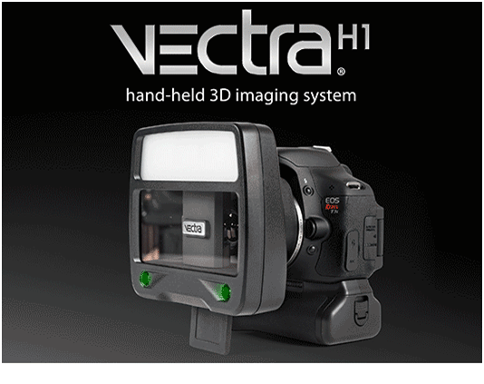
VECTRA H1
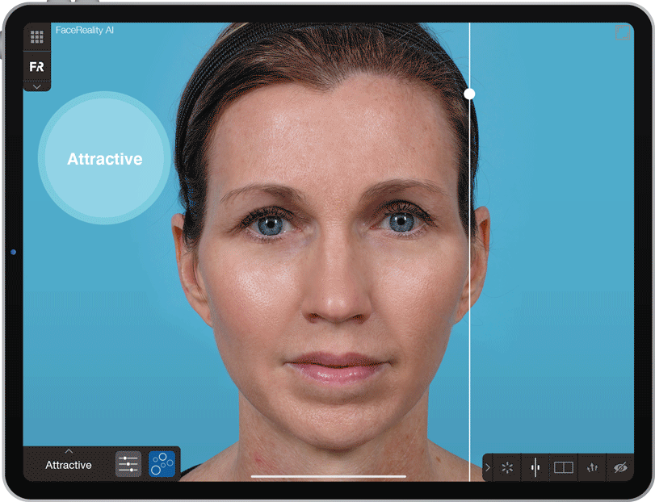
Canfield Mirror® Software
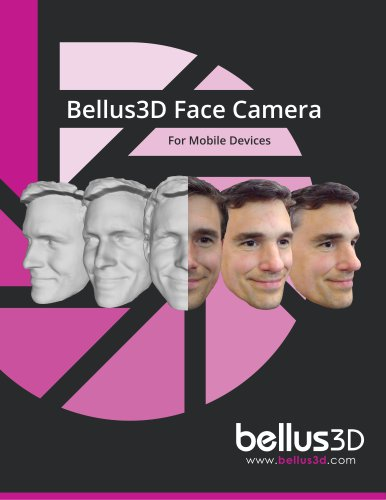
Bellus3D
Cost
$15,000 – $25,000
$10,000 – $30,000
$500 – $1,000
Features
Handheld, high-resolution 3D imaging, pre-operative planning, portable
Pre-operative planning, 3D simulations, post-operative analysis
Affordable, portable, high-resolution 3D face scanning
Limitations
No real-time intraoperative capability; high cost; needs additional software for full analysis
No real-time capability; dependent on additional hardware for 3D imaging
Built for consumer use, not surgical precision; services discontinued
Key insights from user interviews
Methodology: conducted detailed interviews and surveys with 8 facial plastic surgeons and 5 surgical residents to understand their challenges and needs.
90%
Accuracy needs
of respondents emphasized the need for sub-millimeter accuracy in assessing nasal symmetry.
100%
Real-time feedback
requested a tool that provides real-time feedback during surgery.
80%
Ease of use
highlighted the importance of an intuitive and easy-to-use interface to reduce cognitive load during procedures.
Integration with workflow
Surgeons prefer a tool that integrates seamlessly into their existing surgical workflow without significant setup time.
“A two-millimeter difference is the difference between a good result and a revision. I can't reliably see it with my own eyes at that distance.
Facial plastic surgeon14 years in practice
“Anything I have to review afterward is too late. I need the number while my hands are still in there.
Facial plastic surgeonHigh-volume rhinoplasty practice
“If it takes more than a few seconds to set up or read, it won't leave the cabinet. My attention belongs to the patient.
Surgical residentFourth year
Target audience
The interviews resolved into one primary user: an experienced facial plastic surgeon, fluent in traditional technique and open to technology that measurably improves outcomes.
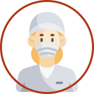
Dr. Emily Roberts
Specialized in rhinoplasty and nasal reconstruction. Works at a leading hospital. Well-versed in traditional surgical techniques but open to new technologies that can improve patient outcomes.
She feels…
- Frustrated by the difficulty in achieving sub-millimeter accuracy
- Limited by lack of real-time feedback during surgery, which hampers the ability to make immediate adjustments
- Upset when patients ask for revision surgeries
She wants to…
- Achieve precise nasal symmetry
- Maintain a high standard of patient care while optimizing surgery times
- Reduce the need for revision surgeries
Design
The technical bet
Using the TrueDepth sensor in iPhone X and newer, instead of dedicated scanning hardware, removed the cost and portability barriers at once — and let us process a scan on the device in real time, which none of the incumbents could do.
It invites an obvious objection: Bellus3D had already tried consumer hardware clinically and withdrawn. But the sensor was never the weak part — published testing puts the iPhone X within 0.44 mm of the Canfield H1, with 0.35 mm repeatability between scans. What failed there was scope, not precision: a face-scanning app with no surgical specificity. Same hardware, different problem.
Three constraints shaped every screen: the app runs on iPhone X and newer, patient data stays on the device with no cloud storage, and everything has to be operable from 30 cm away from the incision — the distance a phone is considered safe in an operating room.
- Pro
- Utilizes existing iPhone technology for a cost-effective and portable solution, enhancing surgical workflow with real-time feedback and high accuracy.
- Con
- Surgeons may need time to adapt to the new technology and interface, potentially slowing initial adoption.
Four ways to read symmetry
Symmetry has no single number. Almost no face is symmetrical to begin with, so the useful question isn't whether a nose is symmetrical — it's what would make it read as symmetrical on this particular face. That ruled out a single score and led to four reference readings the surgeon can move between.
Intrinsic nasal symmetry
Measures the nose against its own midline — whether it is internally consistent, independent of the face around it.
Eccentric nasal symmetry
Measures the nose against the facial midline — whether it sits correctly on this face, even if it is internally consistent.
Mirror image
Reflects one side onto the other, showing deviation directly rather than as a figure to interpret.
Current symmetry line
Shows the reference line as it currently stands, so the surgeon can see what any measurement is being taken against.
A single verdict would have hidden the disagreement between these readings, and that disagreement is the information a surgeon is actually working with. The cost was navigation: four destinations instead of one number — which is what testing went on to flag.
Brainstorming
Two orders of operation went onto paper first. One opens on the patient roster and treats the scan as something you do inside a patient record; the other opens on the camera and asks for the patient details after the scan is taken.
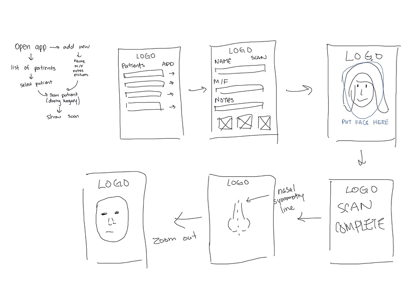
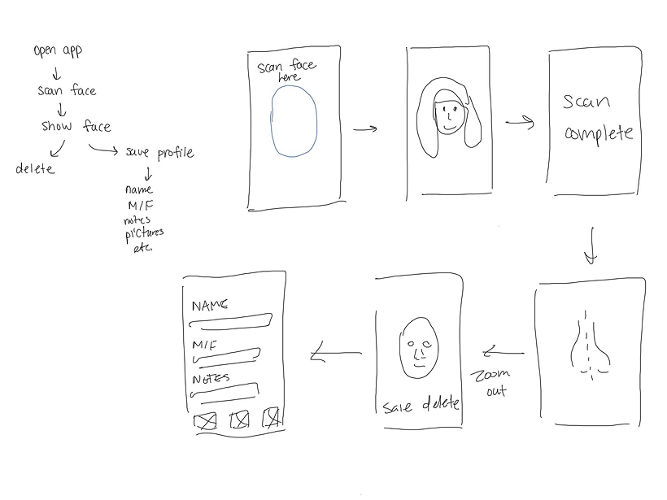
The patient-first order won. Surgeons described returning to the same case repeatedly, and a scan with no record attached to it was the one artifact nobody could use later.
User flow
The app is organized around the patient rather than the scan, so a surgeon returning to a case lands on history instead of a blank capture screen.
Sign in / register
List of patients
Does this patient already have a profile?
Open patient profile
Create profileName · notes · attach images
3D scanView an existing scan, or capture a new one
Scan details
Intrinsic nasal symmetry
Eccentric nasal symmetry
Mirror image
Current symmetry line
Prototyping
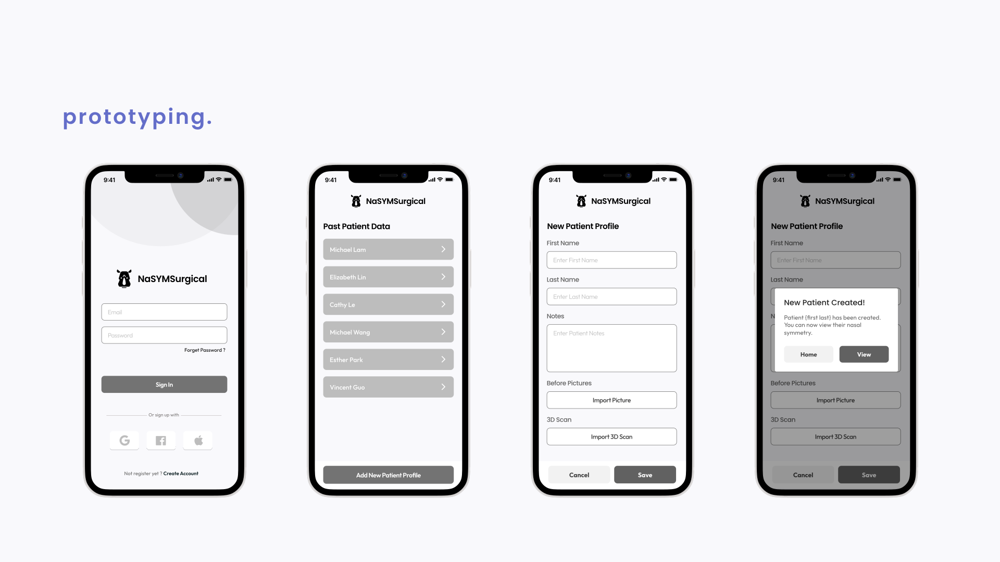
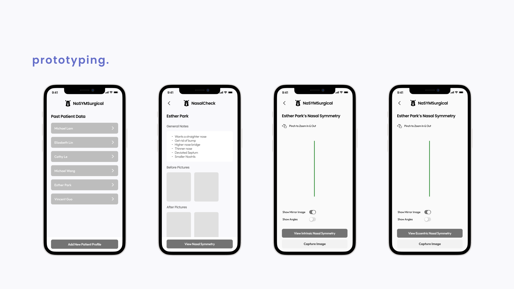
Design system
The app shipped on a small design system rather than one-off screens: color roles, a Poppins type scale, grid and spacing rules, and a component set covering buttons, toggles, text inputs in default, active and error states, dialogs, and icons. It was the first system I built end to end, and the reason systems work became my focus.
Primary
Accent
Text
Logo
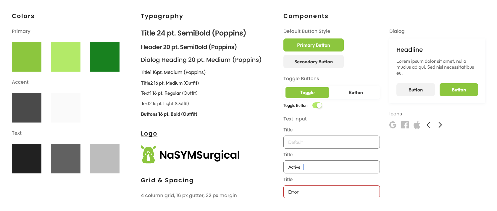
Type scale
Title24 pt SemiBold · Poppins
Header20 pt SemiBold · Poppins
Dialog heading20 pt Medium · Poppins
Title 116 pt Medium · Poppins
Title 216 pt Medium · Outfit
Body text16 pt Regular · Outfit
Secondary text16 pt Light · Outfit
Buttons16 pt Bold · Outfit
Grid
4 columns · 16 px gutter · 32 px margin
Buttons
Toggles
Text input
Dialog
Headline
Supporting copy explaining what the surgeon is confirming.
Icons
Validation
Usability testing
Methodology: cognitive walkthroughs, looking for fundamental problems and pain points in the design. We measured two things, both chosen because a tool used mid-procedure fails if it is slow.
The number of steps to acquire functional data
On average, 3 steps were needed for a user to acquire functional data.
The time it takes for the surgeon to comprehend the data
Users viewed and comprehended data in 2 minutes on average, but stated it would be difficult to look at specific angles at times.
Design change
Surgeons needed a better way to lock into the specific views they were interested in.
That drove the patient card. Delete and edit dropped to secondary actions, "View Nasal Symmetry" was promoted to the primary call to action, and commonly used views surfaced as buttons rather than menu items.
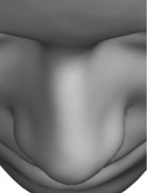
Bird's eyeTop
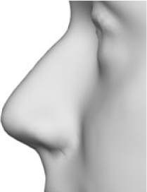
Left
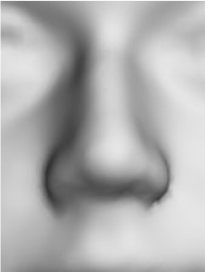
Front
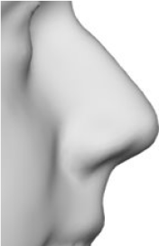
Right
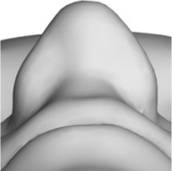
Worm's eyeBottom
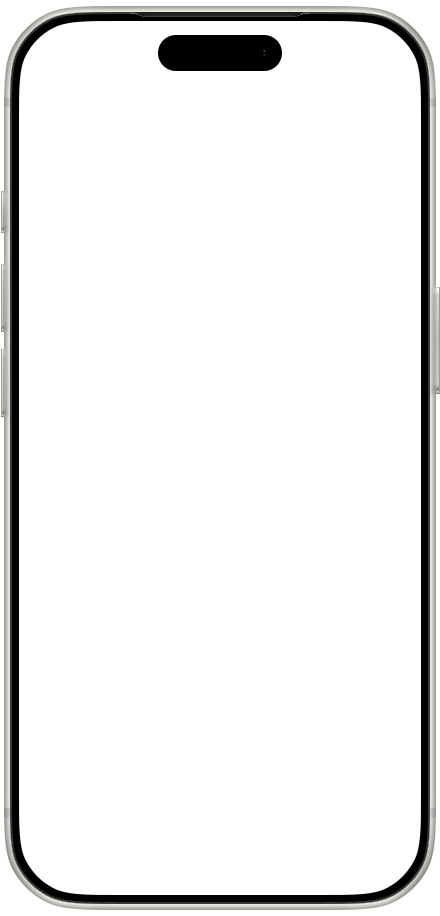
Tested
One button switched between intrinsic and eccentric symmetry. Getting to a specific angle meant pinching and rotating the model by hand.
Revised
Zoom and Angle became segmented controls. Nose or face, then top, left, front, right or bottom — the view snaps to the angle instead of being orbited to it.
Final design
Patient Esther Park has been created. You can now view their nasal symmetry.
Walkthrough of the shipped build. Loops.
Results
We built a working application, not a prototype: scan import, symmetry analysis and the patient record in one tool, written in Swift with a Python backend and handed to the Sunnybrook team at the end of the eight months. Where they took it after that, I don't know — the capstone ended at the handoff.
It met the two thresholds we set. Three steps from opening the app to usable data, and two minutes to read it — fast enough to belong in a procedure rather than around one. Surgeons who tried it found it intuitive, in walkthroughs rather than in surgery.
On the numbers behind the screens: the indicators landed within 1 mm and the analysis returned in under 30 seconds, with the residual error coming from the scan itself rather than the measurement.
One gap stayed open. The scan still came from a separate handheld scanner rather than the phone, so the design assumed an import step it would rather not have. Bringing capture on-device was our first recommendation for whoever picked the work up next, alongside reading symmetry at the nostrils and against facial landmarks, not only the nasal dorsum.
Reflections & takeaways
Design for the room, not the screen
Almost every decision came from the conditions around the device rather than from the interface: gloved hands, a patient in the way, uneven lighting, a surgeon who cannot afford to think about software. Interfaces used inside a procedure are judged on how little attention they demand, which is a different target than how good they look.
A number is not an answer
Symmetry has no single measurement, so the design could not hand over a score and call it done. Deciding to show four readings and let the surgeon judge — rather than resolving it into one figure — was the most consequential call in the project, and it came from the interviews rather than the algorithm.
What I would want next
We never tested it in an operating room. Everything we know came from walkthroughs with surgeons outside the room, so the conditions the whole design was built around — gloves, angles, time pressure — were the one thing we couldn't observe it in. The thing I'd most want is to watch it fail once in real conditions, because that is where the assumptions would actually be tested.